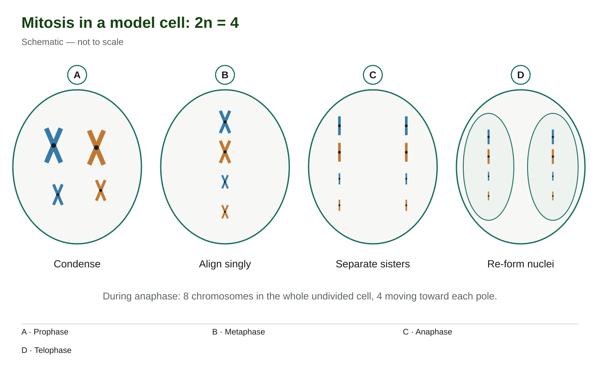
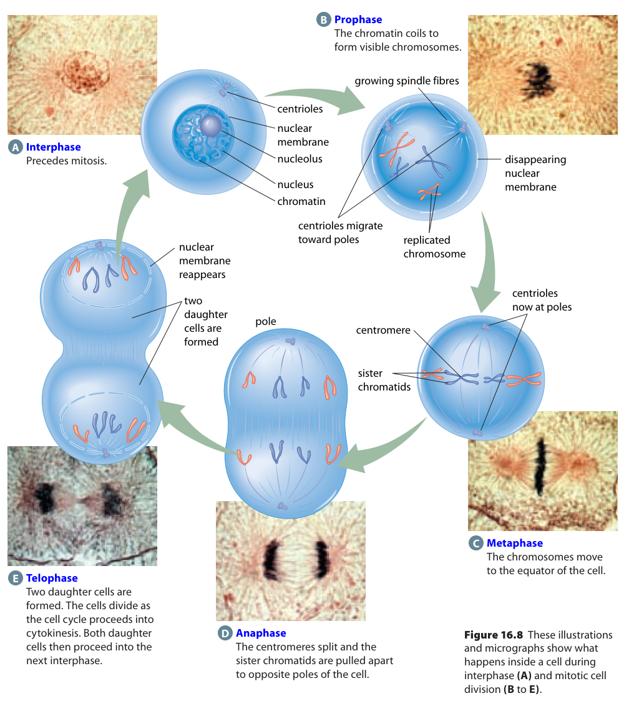

Learn · Chapter 16
How does mitosis give two nuclei a matching chromosome complement?
Learning goal
Trace prophase, metaphase, anaphase and telophase, connecting visible events with accurate chromosome distribution.
Before you begin
DNA replication has already occurred before normal mitosis. Sister chromatids are copies of one chromosome.
Expected work: one completed lesson check. Supported practice, videos and textbook questions are optional. Saved writing is not automatically graded.
Chapter 16 · printed pp. 556–559
Key terms: · · ·
Key terms
Use these definitions when you need help with a term.
Normal mitosis begins after DNA has replicated. During , chromatin condenses into visible chromosomes and the spindle becomes organized. Each already has two ; prophase packages and organizes them rather than making their DNA copies.
Spindle fibres are microtubule structures made of protein. They interact with attachment structures called kinetochores at chromosome centromere regions. As early division proceeds, the nuclear envelope breaks down so that spindle microtubules can reach these attachment sites. Some accounts call part of this interval prometaphase; the four-stage model here groups the early events together.
During , replicated chromosomes align individually along the cell equator. The two sisters are attached toward opposite spindle poles. This arrangement matters because one copy must move toward each future daughter nucleus when the sisters separate.

[Figure: Four replicated chromosomes align individually; sister chromatids separate. Each daughter nucleus receives four chromosomes. Blue and orange identify parental origins, not different cell types. | ./assets/figures/ch16-mitosis.svg]In this 2n = 4 model, A shows four condensed replicated chromosomes; B shows the same four aligned singly. Count whole X shapes, not arms: both panels contain four chromosomes and eight chromatids. The colours represent different parental origins. The simplified model omits spindle detail; the textbook figure below shows the structures involved in movement.
During , sister chromatids separate. Each becomes an individual chromosome, and the spindle helps move the two copies toward opposite poles. These are the copies made in ; movement and separation do not manufacture new DNA.
Read panel C of the first model as one still-undivided cell. It contains eight separated chromosomes, with four moving toward each pole. Each group contains both colours and both chromosome types. A normal mitotic daughter does not receive only maternal chromosomes while the other receives only paternal chromosomes.
Homologues are different from sisters. In meiosis I, the maternal and paternal within a pair separate as intact replicated chromosomes, reducing the number of sets. A paired set of two replicated homologues contains four chromatids and is called a tetrad. Mitosis does not normally arrange homologues into tetrads: it separates the sister copies of each chromosome and preserves the diploid complement in this model.

[Figure: Use chromosome condensation, alignment, separation and nuclear re-formation to identify stages. Interphase belongs to the cell cycle but is not a stage of mitosis. | ./assets/figures/ch16-source-mitosis.png]The source image uses a different letter system from the first model. Here A is interphase, before mitosis; B is prophase, C metaphase, D anaphase and E telophase with cell separation. Follow the arrows and compare the chromosome arrangements with the corresponding micrographs. Do not transfer the first model's letter answers to this second figure.
During , chromosomes reach opposite poles, become less condensed and are enclosed by forming nuclear envelopes. The spindle breaks down. In panel D of the first model, two smaller envelopes enclose the two chromosome groups within the original cell boundary. Two nuclei have formed; cytokinesis is the separate division of the cytoplasm that completes or overlaps cell separation.
In textbook panel E, both nuclear re-formation and the pinching cell shape are shown. Use the forming nuclei as evidence of telophase and the narrowing cell boundary as evidence of cytokinesis. The processes are coordinated, so their appearance together does not make the two names interchangeable.
PMAT summarizes prophase, metaphase, anaphase and telophase. To identify a new image, connect each name to evidence: condensation and spindle organization; single alignment at the equator; separated chromosomes moving apart; or nuclei forming around the groups. A still image cannot directly show motion, and a blurred feature may be insufficient to decide a stage confidently.
Normal mitosis distributes matching chromosome complements to the two daughter nuclei. This is the expected outcome of accurate replication and separation, not a guarantee that no mutation or division error can ever occur. Next, you will compare how the cytoplasm separates in plant and animal cells.
Worked example
Given: A model cell contains two groups of separated chromosomes moving toward opposite poles, and new nuclear envelopes have not formed. Question: Which mitotic stage best fits, and why?
Check: movement is part of the supplied scenario. If you had only an unclear still photograph, you would need visible chromosome/nuclear features rather than assuming motion from the PMAT abbreviation.